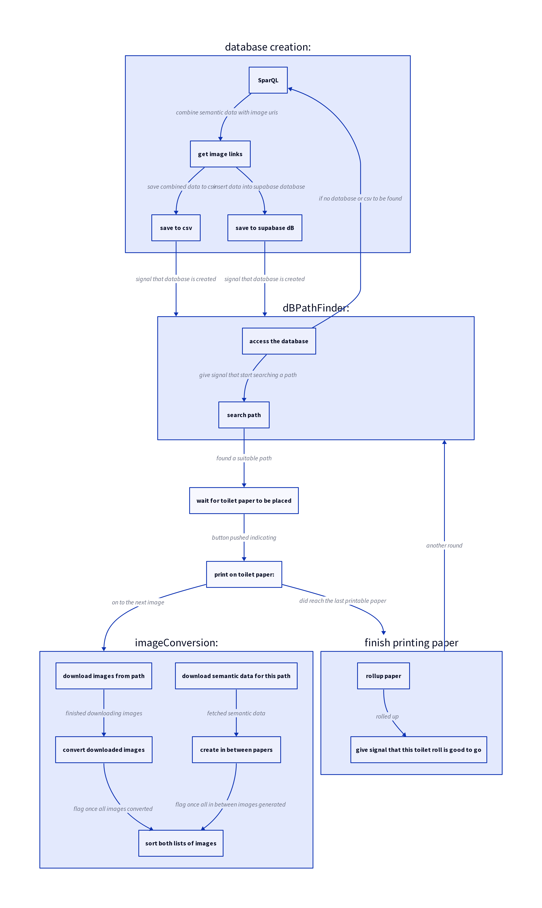

Process
- getting the data and preparing it
- insert paper roll
- paper gets sucked down with the fan
- two steppers to roll off the paper
- when to stop rolling? Camera + notches + light to the rescue
- drawing via axidraw mini
- drawing with markers on toilet paper: the good, the bad & a lot of uglyness
- the physical setup: lasercut + 3D print
Getting the data and preparing it
- initial plan: Nvidia Jetson, yet shortage, had an RPi 4 around.

insert paper roll
paper gets sucked down with the fan
two steppers to roll off the paper
- notice: had to sand of all hard corners & align the height of all different parts, so the corner the paper took was not too steep. otherwise the paper would get torn apart.
When to stop rolling?
Drawing via Axidraw Mini
drawing + markers + toilet paper
- fonts: single line fonts necessary
- ink flows: need to take into account not using small text
- markers: need soft tips (not tearing the paper) +